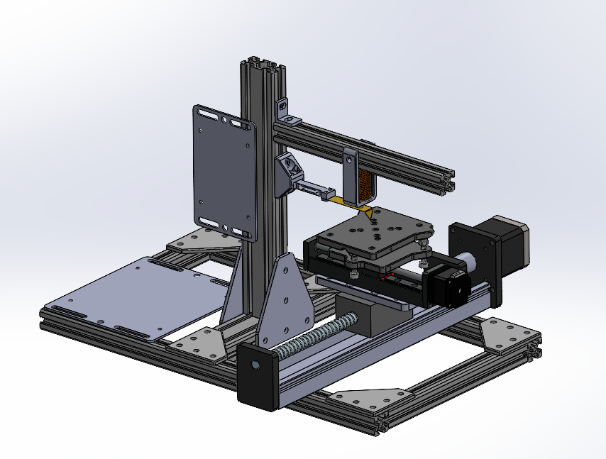
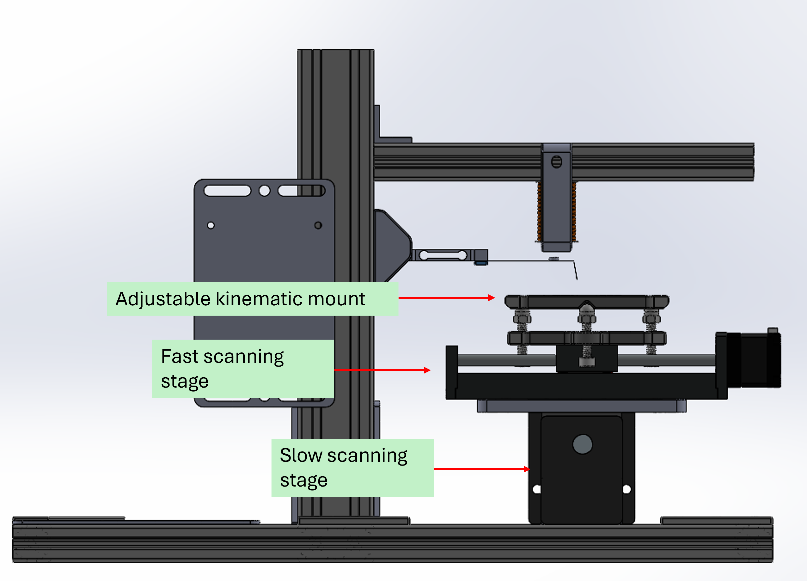
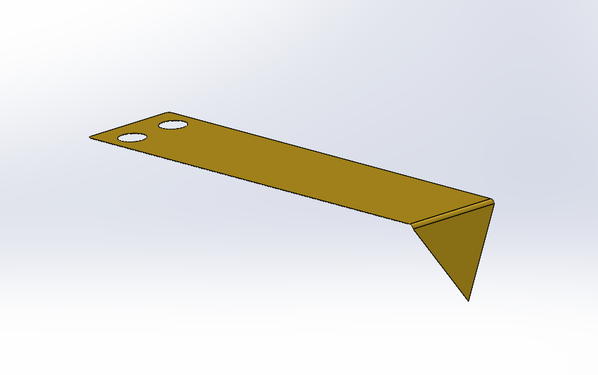
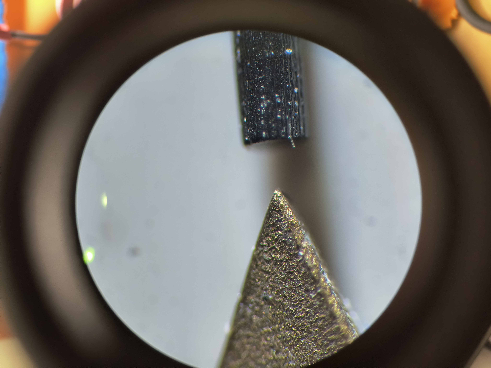

Macroscope, a simple 3D profiler demonstration

A constant-height, contact mode atomic force microscope/profilometer.
Github repository (contains firmware, schematics, and Solidworks models) here:
https://github.com/jarofmolasses/macroscope
Inspired by this paper.
With partner: David Antoniuk

This was our final project for MECH 423, a course at UBC.
It is intended to be a simple demonstration of the atomic force microscopy principle, using a pair of linear motion stages to scan a flexible measurement probe
across a test sample. The local height of the sample deflects the probe, and the probe deflection is
measured using a load cell. Our target resolution was a voxel size of 50 micron.
In this project, I primarily handled the electronics and the sensing mechanics.
I later revisited the project and redesigned the XY stage to make it more compact (images in this article are of the redesign).
Mechanical structure

The frame experiences very little loading from the measurement process, because our target probe force is on the order of 1cN.
Still, for a "precision machine", stiffness is a priority. Structural connections are done with large plates to increase joint rigidity. 2020 and 2040 aluminum extrusions
make up the majority of the frame, due to their high rigidity-to-convenience ratio. Components can be positioned freely, especially useful for
setting the position of the probe at an appropriate height above the sample platform.

The arrangement of the linear stages is straightforward. The smaller, "fast scanning" stage on top is responsible for scanning across each raster line and the larger
"slow scanning" stage below moves the sample to the next raster line. The slow scanning stage is larger to make it easier to bring the sample platform out from underneath the
probe for sample mounting. The motion of the stepper stages is not smooth (on a micron level), and generally to acquire a useful height measurement the sample must come to rest
before the ADC collects samples.
External factors like thermal expansion and mechanical vibrations can also affect the measurement.
For a 50-micron resolution target, a sturdy workbench and a silicone sheet as damping was enough to achieve good scan results.
Probe design


The sensing probe is mounted as a cantilever on the end of the beam-type load cell.
It is cut from a sheet of brass and is tuned to give a static deflection of 50 micron per centinewton. Brass was chosen for its Young's modulus and machinability.

Probe tip, compared to 0.5mm (500 micron) pencil lead. Magnification 80X
The brass probes directly off the waterjet have fairly coarse edges, but a quick hone on a sharpening stone can bring the corner to a very sharp point.
Though the exact tip radius is not known we could show that it was possible to resolve 50 micron features.
The sample is mounted on a kinematic adjustment platform, and trimmed to be level with the XY stage and at the right height.
The probe should be set with a light preload to ensure the surface topography can be fully captured. Naturally, there is a limited height range allowed.
As the probe is driven across the surface of the sample, a force is applied to the load cell corresponding to the height of the sample.
This is functionally a sort of "constant height" AFM scanning, the most rudimentary original method.
Strictly speaking, the load on the end of the probe also acts on the load cell itself, causing a non-zero deflection of the load cell body. Because the stiffness of the load cell is much
higher than the stiffness of the probe, this is largely negligible.
There is a tradeoff here: a higher stiffness cantilever will give a higher spatial resolution in a constant-height AFM using a load cell,
but the tip-sample interaction force will be higher. Excessive interaction forces could distort measurements or damage the probe and sample surface.
A small stack of magnets mounted at the end of the probe allow the probe to be raised and lowered by the voice coil mounted above it.
The simple probe is only well suited to scanning in one direction, so the probe is reset after each raster line by lifting the probe and
setting the tip back down at the start of the next line.
The noise of the ADC, the stiffness of the probe and the sensitivity of the load cell define the Z resolution. The stepper stage
resolution and the probe tip radius determine the X and Y resolution.
Sensing electronics

The load cell signal is received by a 24-bit ADC (ADS1256). The ADC board is mounted close to the load cell,
to limit induced noise from long load cell wiring. The ADC is on a commercially available
breakout board, which is modified to allow for a ratiometric configuration of the load cell and ADC.
The ADS1256 includes a comprehensive analog front-end built in, and the noise performance is good enough for reaching our target 50 micron resolution.

The controller board hosts the rest of the electronics - the microcontroller,
the reference voltage for the ADC and load cell, and the motor drivers.
Software interface

The system is programmable using a set of SCPI-like commands, and it can be controlled by manually writing commands in a serial terminal or by using a companion GUI.
A GUI was developed using Winforms for this purpose: https://github.com/JarofMolasses/macroscope_control
Results

Scan of a 5c coin with 0.25mm grid size.

Scan of a small 3d printed test sample with 0.1mm stepped features, using 0.05mm grid size. The diagonal striations on the bottom step are the top layer print lines.
We were able to get some nice scans out of this simple setup. A conservative estimate of the Z-height resolution is 0.01mm, based on the input noise of the ADC and the sensitivity of the probe. In X and Y the minimum resolution is limited primarily by the radius of the probe tip at around 50 micron.
The scanning process is slow, mostly because the structure needs time (~0.5 seconds) to settle before each measurement is taken. This could be improved using smoother stepper driving (e.g. Trinamic 256-step drivers), reducing the Q-factor (e.g. by adding damping to the leadscrew assemblies) or using mechanically "quieter" actuators (such as a voice coil or piezo actuators).
Considerations for nanometer-precision AFM
Steppers are very convenient and allow for relatively accurate open-loop control over short distances, but cannot achieve nanometer precision. They also get very hot. For that level of resolution, piezo actuators are the status quo. In real atomic force microscopy, low temperature coefficient materials like Invar and active vibration-isolating tables are also often used to mitigate external disturbances. Even so, AFM is still generally less picky with conditions than SEM or TEM, in that it can easily be done without vacuum.Actual nanometer-resolution AFMs often use a "variable height, tapping mode" scanning. They have a third Z-axis motion stage which maintains a constant tip-sample interaction via PID control, and the probe oscillates as it traverses the sample surface. In these implementations, changes in the amplitude and frequency of the probe oscillation are used to infer the tip-sample distance. The measurement of the probe movement is usually not force-based, instead an optical lever is common.
(Updated August 2025)
December 2023